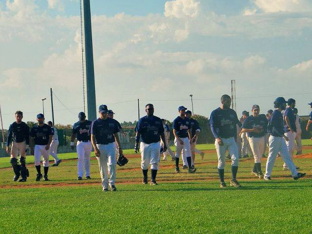

La squadra lastrigiana contro i White Sox di Buttrio. Dopo un viaggio all’insegna del divertimento e della inebriante attesa di giocare queste partite così importanti, ecco com’è andata:
Gara 1
Partita molto bella dal punto di vista difensivo. Infatti i due protagonisti sono stati i lanciatori. Il lanciatore della squadra friuliana ha messo a segno 18 strikeout’s subendo solo una valida, lasciando i Lancers a 0.
Alle stesso modo, dalla nostra parte, Daniele Ciappi ha messo a segno 14 strikeout’s lasciando anche lui i White Sox sul punteggio di 0 fino al nono.
Nella parte alta del nono inning, nonostante Nerbini e Albano fossero rispettivamente in terza ed in seconda con 0 out, la squadra lastrigiana non riesce a portare nemmeno un punto a casa.
Inizia la parte bassa del nono inning e subito un out viene messo a segno dalla squadra lastrigiana. Tuttavia una valida ed due “errori” di fila (se così possiamo definirli) portano il punto della vittoria alla squadra di Buttrio.
Amaro è sapore della sconfitta, ancor più se subito in questo modo.
Un infinito Ciappi a fine partita riceve i complimenti di tutti, e carica egli stesso la squadra per la partita successiva.
Gara 2
Cambia la batteria, sul monte Baratella e a ricevere Becattini. In terza Albano e dh Ciappi. Ecco i cambiamenti.
Fin dall’inizio si vede una squadra diversa, infatti subito i Lancers partono in vantaggio con 3 punti e continuano per svariati inning a segnarne ancora. Anche il Buttrio inizia dopo il terzo inning a mettere su punti, alternati da svariati doppi giochi conclusi dall’asse Degl’Innocenti-Pistol e da Albano-Lakry Diaz.
Si arriva così nella parte bassa dell’ottavo inning. Qui la svolta. Punteggio sul 9-7 per la squadra fiorentina. Qui ben tre errori di fila di Pistol, Degl’Innocenti e Albano (fino a lì tutti impeccabili ) portano il pareggio della squadra di Buttrio. 9-9 al nono… dèjá vu?
La squadra fiorentina tuttavia non demorde e riempie le basi. Ma qui il manager friuliano fa un cambio e rimette sul monto il lanciatore di gara 1, chiude a 0 e cambio.
Stavolta però anche i Lancers, aiutati sul monte da Nannucci (entrato per Baratella al settimo) chiudono a 0.
E così si arriva agli extra inning. In attacco ben poco fatto dai Lancers che crollano ancora sotto le veloci del lanciatore del Buttrio. Nel loro attacco purtroppo, un paio di valide messe a segno dai battitori friuliani fanno entrare ancora un punto che sancisce la vittoria del Buttrio anche in gara 2.
La rabbia della squadra dei Lancers a fine partita è tanta, tuttavia si manager Ciappi e Gentilini si congratulano con i propri ragazzi per le due splendide partite, che ricordiamo partecipano per la prima volta ai play-off.
Adesso inutile dire che per continuare a sognare dobbiamo crederci tutti, perché al Buttrio ne basta una su tre per passare in B.
Ma loro adesso vengono da noi, in casa nostra!!!
Ed in casa nostra, come sempre, comandiamo noi.
Vogliamo il sostegno di tutti, a partire dalle tifose fino ad arrivare alle giovanili, dagli amici fino ai parenti e a tutti i LASTRIGIANI!
E come diceva il grande Yogi Berra che ci lascia oggi a 90 anni…”The game’s isn’t over until it’s over.” “Non è finita finché non è finita.“